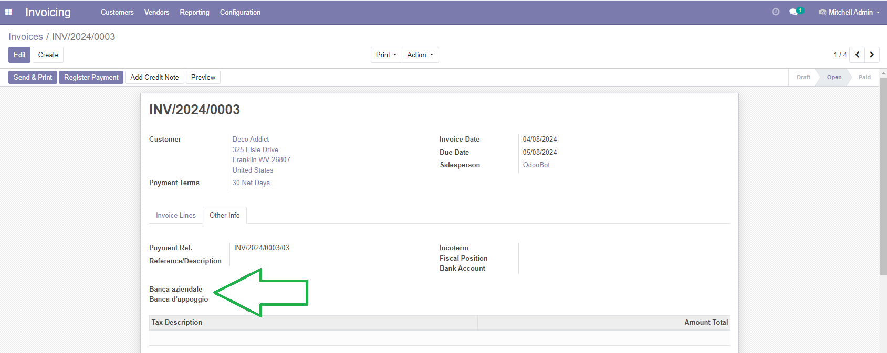

Common account fields

Dati contabili comuni a vari moduli



This module adds some fields to models to manage company and counterpart bank accounts.

Questo modulo aggiunge i campi per la gestione dei conti bancari aziendali e di appoggio.
Authors | Autori:
Contributors | Partecipanti:
This module is maintained by the SHS_AV s.r.l..
This module is part of l10n-italy-supplemental project.
Published information on | Informazioni pubblicate: 2024-04-11